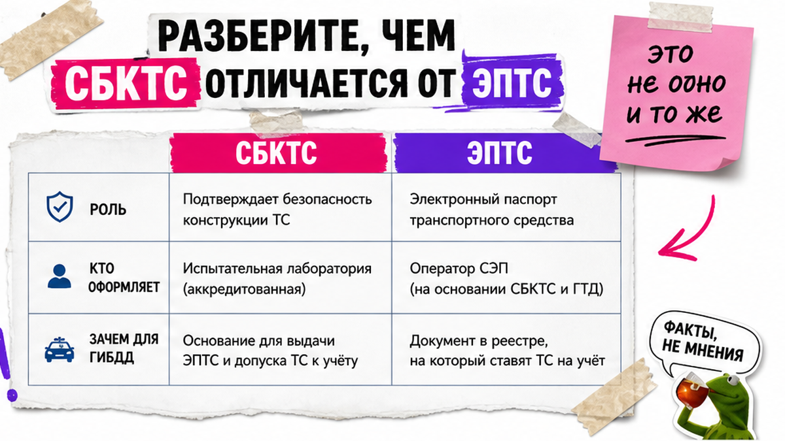
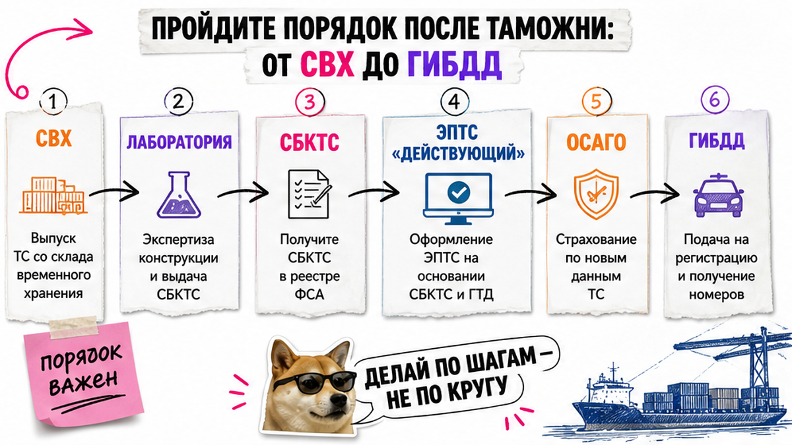
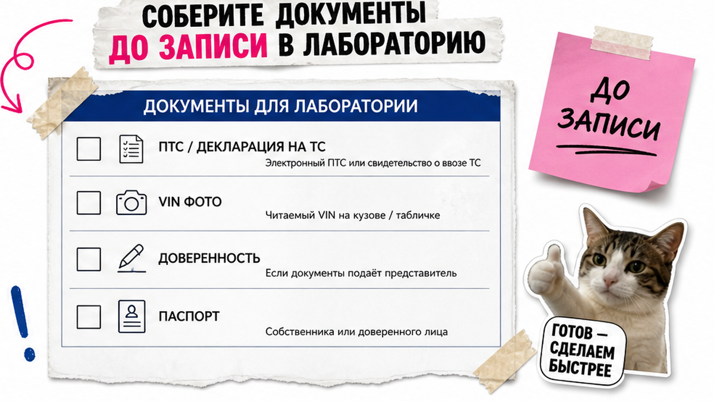

Таможню во Владивостоке уже оплатили, машина на СВХ, а знакомый пишет: "закажи СБКТС по фото в телеге за пару тысяч". Боль новичка тут простая: сложно понять, чем СБКТС отличается от ЭПТС и в каком порядке их делать, плюс страх отдать деньги "серой" лаборатории или приехать в ГИБДД без готового пакета. Ниже – спокойный порядок: чеклист документов, проверка лаборатории в реестре и критерий, когда можно ехать за номерами.
Коротко по делу: СБКТС – заключение лаборатории, что конструкция безопасна по правилам ЕАЭС. ЭПТС – электронный паспорт в системе СЭП вместо бумажного ПТС. Оба нужны для учёта. Путь: выпуск с таможни → очный осмотр в аккредитованной лаборатории → СБКТС → ЭПТС со статусом "действующий" → ОСАГО → ГИБДД. "Свидетельство по фото" без реестра – путь к отказу.
Тут важный момент: даже когда ЭПТС уже "есть", машина часто не готова к учёту. Паспорт может висеть в статусе "незавершённый", пока таможня не передаст данные об утильсборе. По отраслевым гайдам это обычно около двух недель, верхняя оценка – до месяца. Скрин в телефоне ещё не равен готовности ехать за номерами.
Цены СБКТС, ЭПТС и пошлин в статью не ставим: актуальный расчёт – в каталоге avto-sales125.ru или в переписке с менеджером.

Новички часто думают, что это "одно и то же под разными буквами". Нет. Это два документа с разными ролями – как медсправка и паспорт: для ГИБДД нужны оба.
| Что сравниваем | СБКТС | ЭПТС |
|---|---|---|
| Простыми словами | Лаборатория подтвердила: конструкция безопасна по ТР ТС 018/2011 | Электронный паспорт машины в реестре СЭП (вместо бумажного ПТС) |
| Кто оформляет | Аккредитованная лаборатория после осмотра | Уполномоченная организация на основании СБКТС и таможенных данных |
| Зачем для ГИБДД | Без него нельзя легально завести ЭПТС на типичный единичный ввоз из Азии | Без статуса "действующий" и выписки учёт не откроют |
| Чем не является | Не заменяет ПТС и не даёт право ездить без учёта | Не путать со СТС (свидетельством о регистрации) |
Вердикт: сначала живой СБКТС, потом ЭПТС. Обещать "ЭПТС в обход лаборатории" на типичный единичный ввоз – красный флаг.
Делать: запомнить две роли. Не делать: ждать, что таможня "сама всё оформит" – выпуск ТД/ТПО и пара СБКТС+ЭПТС живут в разных контурах.

На практике безопасная цепочка такая. Не прыгайте через ступеньку ради "за день всем".
Схема: выпуск ТД/ТПО → пакет документов → запись в аккредитованную лабораторию → очный осмотр → СБКТС в реестре → ЭПТС → статус "действующий" в СЭП → выписка + ОСАГО → ГИБДД
Типичная ошибка – бежать сразу в МРЭО "пока очередь маленькая". Без пакета развернут. Делать: идти по схеме сверху вниз. Не делать: платить за "ускорение без осмотра".

Осмотр будет очный: машину смотрят живьём. Фото полезны для заявки, но не заменяют визит. До записи соберите минимум:
Например, по Японии с правым рулём чаще "ловят" фары и маркировку. По Корее – комплектацию и историю. По Китаю – описание модели и документы, особенно для электромобиля. База пакета одна, нюансы страны – в деталях проверки.
Делать: сверить VIN с бумагами до записи. Не делать: ехать с нечитаемым VIN и надеяться, что "разберутся на месте".
Вот сценарий из жизни: человек на СВХ, знакомый кидает контакт "оформим СБКТС по фото". Типичная проблема – деньги уходят, а в ГИБДД выясняется: свидетельства в реестре нет, ЭПТС не стал "действующим". Переделывать потом долго и часто дорого; проще потратить 15 минут на проверку лаборатории до оплаты.
Делать: платить только после сверки ИНН и области аккредитации. Не делать: покупать "бланк без осмотра".
Если везёте авто под ключ – напишите в Telegram @avtosales125: подскажут по пакету и этапам без форм на этой странице. Офис Авто-Сейлс: Владивосток, Днепровская 40а, стр. 4.
Лаборатория смотрит соответствие конструкции, не "красивое фото". Частые причины отказа:
В реальном проекте проще потратить день на подготовку, чем ловить письменный отказ. Делать: до записи спросить лабораторию, что смотрят на вашей модели. Не делать: прятать тюнинг.
ЭПТС оформили – ещё не финиш. Откройте dp.elpts.ru (старый portal.elpts.ru для заказов услуг закрыт). Нужен статус "действующий". Если висит "незавершённый", чаще ждут передачу данных об утильсборе от ФТС. Не ездите в ГИБДД "на авось".
Критерий готовности к учёту:
Когда все пять пунктов зелёные – пакет собран. Актуальные сроки и сопровождение – в каталоге Авто-Сейлс, без готовых сумм в статье.
Делать: скрин статуса "действующий" + выписка + полис перед поездкой. Не делать: путать ЭПТС со СТС.
Материал проверен: Редакция Авто-Сейлс – эксперты по авто под заказ из Японии, Кореи и Китая (Владивосток, Днепровская 40а, стр. 4).
Достоверность: факты сверены с материалами ФГУП НАМИ (филиал Владивосток), ТР ТС 018/2011, реестром Росаккредитации (pub.fsa.gov.ru/ral), платформой СЭП (dp.elpts.ru) и отраслевыми гайдами по СБКТС/ЭПТС на дату 2026-09-29. Актуальные расчёты – только в каталоге.
Для типичного физлица с единичным ввозом – нет. В системе СЭП нужен документ соответствия (СБКТС или ОТТС). Обещания "без лаборатории" обходите и проверяйте лабораторию в реестре до оплаты.
Точный день не обещаем: у лабораторий разные окна. Ориентир – несколько рабочих дней на СБКТС после осмотра, затем дни на ЭПТС и отдельное ожидание статуса "действующий" из-за утильсбора. Срок по вашему VIN уточняйте у лаборатории или в сопровождении.
База документов одна. У японских праворулек чаще риск по фарам, у Кореи – сверка комплектации и истории, у Китая – описание модели и документы, особенно для электромобилей. Не верьте фразе "из Китая всегда проще" без проверки конкретной машины.
Требования менялись и продлевались. Не опирайтесь на чужой скрин "до 2027 всем отменили". Перед ввозом уточните актуальное требование на дату вашей поставки и не смешивайте правила для физлиц и юрлиц.
Лабораторию – в pub.fsa.gov.ru/ral по ИНН и области ТР ТС 018/2011. ЭПТС и статус – на dp.elpts.ru через Госуслуги. Нужен статус "действующий", плюс выписка перед ОСАГО и ГИБДД.
Откройте кабинет СЭП и проверьте статус. Если "незавершённый" – ждите передачу данных об утильсборе. Если "действующий", но отказали – проверьте выписку, ОСАГО по номеру ЭПТС и таможенные бумаги, затем запросите письменную причину отказа.